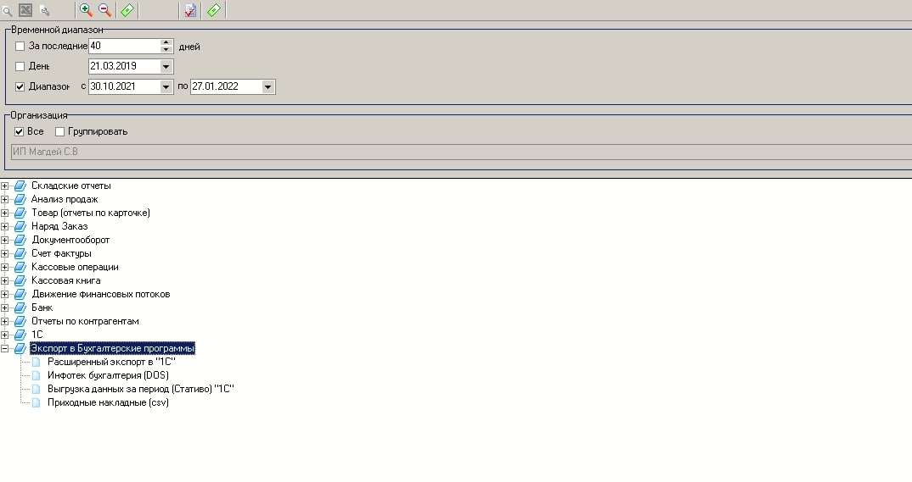
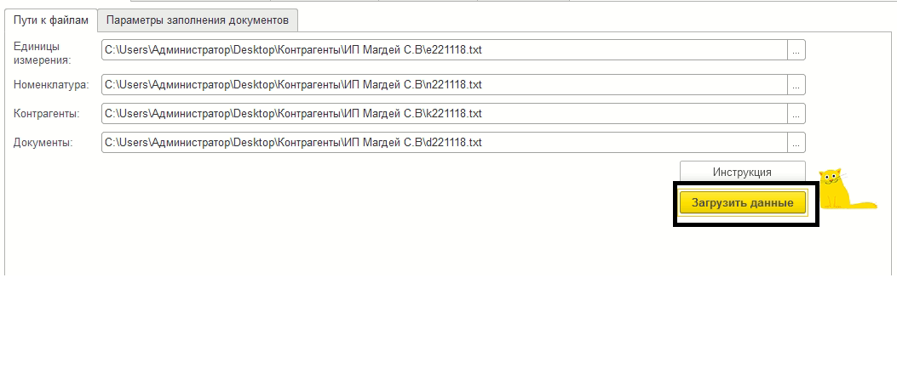
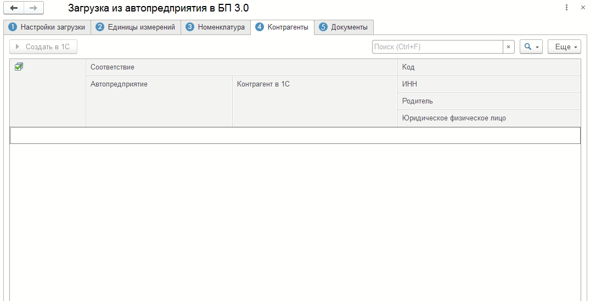
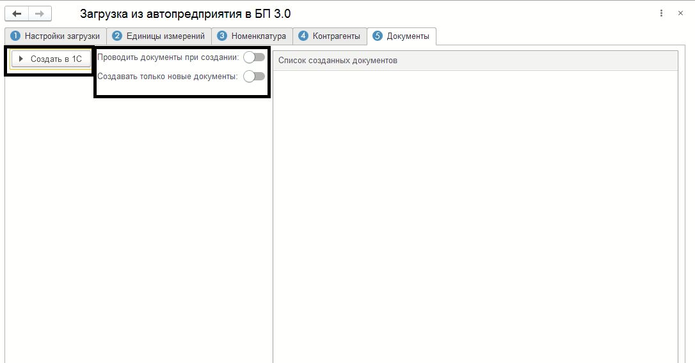

Обработка предназначена для загрузки данных из файлов полученных при выгрузке из Автопредприятия
Перед тем как произвести загрузку в 1С, необходимо сделать выгрузку из Автопредприятия.

Для каждого справочника и документа необходимо выбрать нужный файл (ниже описание какой файл чему соответствует):
Единицы измерений - e<ДатаВыгрузкиАвтопредприятия>.txt (последний по дате выгрузке, найбольший по размеру).
Номенклатура - n<ДатаВыгрузкиАвтопредприятия>.txt (последний по дате выгрузке, найбольший по размеру).
Контрагенты - k<ДатаВыгрузкиАвтопредприятия>.txt (последний по дате выгрузке, найбольший по размеру).
Документы - d<ДатаВыгрузкиАвтопредприятия>.txt (последний по дате выгрузке, найбольший по размеру).
Шаг первый - указываем файлы загрузки, проверяем параметры заполнения документов и справочников.

В каждой из вкладок - кнопка <Создать в 1С> активна только при наличии новых элементов каждого из справочника. Поиск происходит по коду.

Последняя вкладка непосредственное создание документа из файлов.
